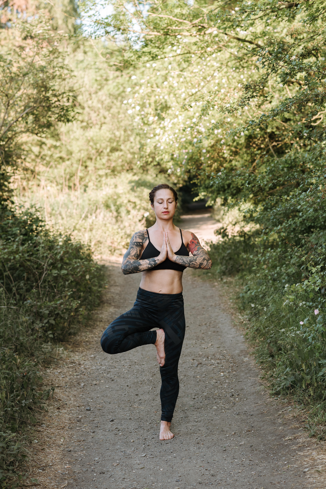

A classic standing posture, Vrksasana establishes strength and balance, and helps you feel centered, steady and grounded.
Vrksasana (Tree Pose) teaches you to simultaneously press down and feel rooted as you reach tall like the branches of a mighty tree. In this pose, you find a sense of groundedness through the strength of your standing leg. Bringing the sole of your opposite foot to your shin or thigh challenges your balance. Continuously engage your ankles, legs, and core and notice what tiny movements your body might make to help you stay balanced.
By strengthening your legs, glutes, core, and back, Tree Pose can improve your posture and alignment, which is especially helpful if you sit throughout the day.
This standing posture can help improve your balance, as well as your postural and body awareness. In addition to its physical benefits, this pose can assist in calming and relaxing the mind—relieving anxious thoughts and feelings.
Steps to do Vrksasana:

- Stand in Tadasana. Spread your toes, press your feet into the mat and firm your leg muscles. Raise your front hip points toward your lower ribs to gently lift in your lower belly.
- Inhale deeply, lifting your chest, and exhale as you draw your shoulder blades down your back. Look straight ahead at a steady gazing spot.
- Place your hands on your hips and raise your right foot high onto your left thigh or shin. Avoid making contact with the knee.
- Press your right foot and left leg into each other.
- Check that your pelvis is level and squared to the front.
- When you feel steady, place your hands into Anjali Mudra at the heart or stretch your arms overhead like branches reaching into the sun.
- Hold for several breaths, then step back into Mountain Pose and repeat on the other side.